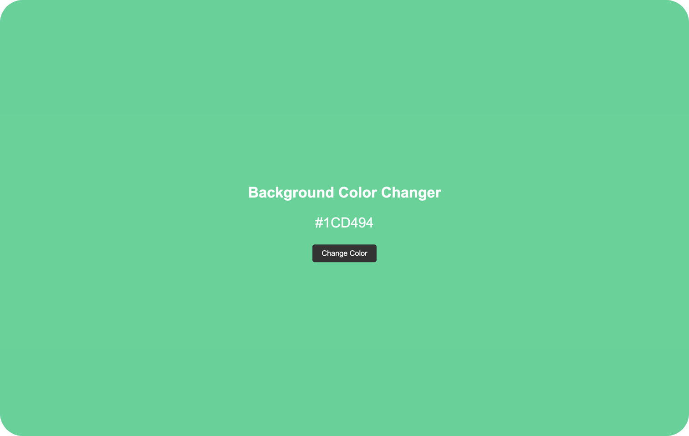

Background Color Changer
Background Color Changer is a JavaScript project that allows users to dynamically change the background color of a web page by clicking a button. The project provides a simple interface and intuitive where users can experience the fun of random color generation.
The main functionality of Background Color Changer is based on JavaScript. By clicking the button, the The application generates a random color code and applies it as the background color of the web page. Also, the generated color code is displayed as text, allowing users to easily identify the current background color.
This project is designed to demonstrate the capabilities of JavaScript in DOM manipulation and dynamic updating of the elements of the web page. It serves as a fun and interactive way to explore the possibilities of color customization on a website.
Features
 Random
generation of background colors.
Random
generation of background colors.- Instant
background color update on button click.
- Display of
the generated color code as reference text.
Technologies
- HTML
- CSS
- JavaScript